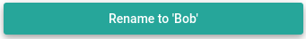

Let's consider a simple example plugin that provides an action button on all assets which renames an asset to "Bob" when clicked.
NameBobAssetActionProvider.alink.js
import { h } from 'vue';
import { QBtn } from 'quasar';
export default class NameBobAssetActionProvider {
static onLoad(handle, assetLink) {
handle.defineSlot('com.example.farmos_asset_link.actions.v0.name_asset_bob', slot => {
slot.type('asset-action');
const doActionWorkflow = async (asset) => {
await assetLink.entitySource.update((t) => {
return t.updateRecord({
type: asset.type,
id: asset.id,
attributes: {
name: 'Bob',
},
});
}, {label: `Rename asset: "${asset.attributes.name}" to "Bob"`});
};
slot.component(({ asset }) =>
h(QBtn, { block: true, color: 'secondary', onClick: () => doActionWorkflow(asset), 'no-caps': true }, "Rename to 'Bob'" ));
});
}
}
Explained Line-by-line(ish)
First we import some stuff from Vue and Quasar which are used later to render the action button.
import { h } from 'vue';
import { QBtn } from 'quasar';
Next we export a class to hold our plugin functionality. This class should provide static methods as documented in the IAssetLinkPlugin interface.
export default class NameBobAssetActionProvider {
Then we provide a static onLoad method which is used to define most of a plugin's functionality. See IAssetLinkPlugin.onLoad
static onLoad(handle, assetLink) {
Then we call IAssetLinkPluginHandle#defineSlot on the handle object, passing a unique id for the action and a function which will define the action.
Here the slot argument to that function will be an instance of IAssetLinkPluginSlotHandle
handle.defineSlot('com.example.farmos_asset_link.actions.v0.name_asset_bob', slot => {
The type of our slot is an 'asset-action' which the default plugin AssetActionsPageSlotProvider renders on the asset pages under the header "Actions".
slot.type('asset-action');
Define an async function that will get called when our action button is clicked.
const doActionWorkflow = async (asset) => {
Begin describing a data update transaction t via Orbit.js. See Farm Data Access and the Orbit.js Updating data docs.
await assetLink.entitySource.update((t) => {
Return a single update action as part of this transaction.
return t.updateRecord({
// The `type` and `id` fields are required to uniquely identify the asset to be updated
type: asset.type,
id: asset.id,
// The asset attributes to be updated
attributes: {
name: 'Bob',
},
});
Include some metadata describing the update so Asset Link can communicate the progress of this transaction to the user.
}, {label: `Rename asset: "${asset.attributes.name}" to "Bob"`});
Define our component as an anonymous render function which accepts the context including the asset property and renders a secondary block button.
When the button is clicked, we call the doActionWorkflow function defined earlier.
slot.component(({ asset }) =>
h(QBtn, { block: true, color: 'secondary', onClick: () => doActionWorkflow(asset) }, "Rename to 'Bob'" ));

Above we're using Javascript's destructuring assignment feature to
unpack the asset property from the slot context (params).
It could also be written as;
slot.component(context =>
h(QBtn, { block: true, color: 'secondary', onClick: () => doActionWorkflow(context.asset), 'no-caps': true }, "Rename to 'Bob'" ));
- To understand the
hfunction and Vue render functions, see the Vue docs on render functions. - For Quasar buttons see the Quasar Buttons docs.
Similarly, if we didn't want to use an anonymous render function, we could pass an actual Vue component there. i.e.
import { defineComponent } from 'vue'
const RenameToBobButton = defineComponent({
props: {
asset: { type: Object, required: true },
},
methods: {
async doActionWorkflow() {
// Same as above except that the asset would be referenced via `this.asset`
}
},
template: `
<q-btn block color="secondary" @click="() => doActionWorkflow()" no-caps>
Rename to 'Bob'
</q-btn>`
});
slot.component(RenameToBobButton);